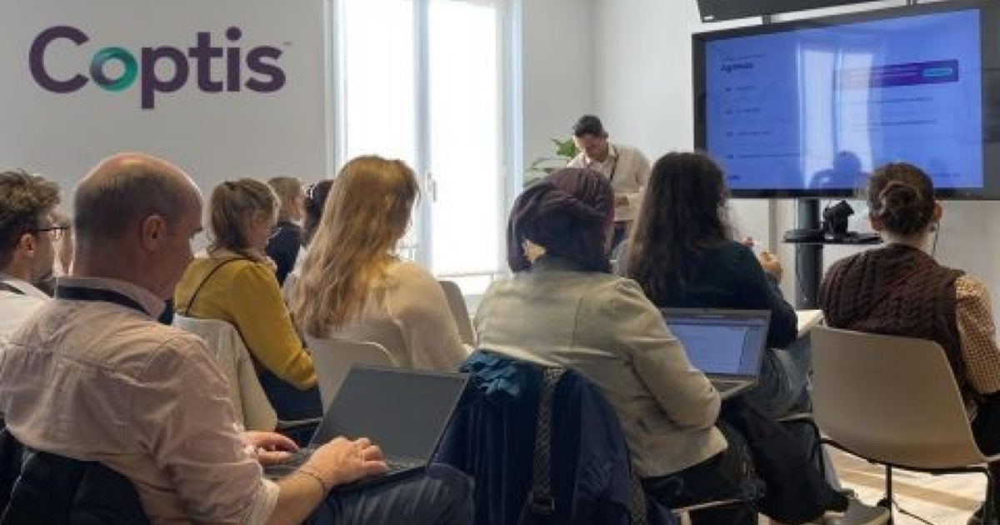

Coptis представляет Purple, ИИ-агент «Prompt-to-Formula» для исследований и разработок в области косметики
На своем ежегодном Клубе пользователей, состоявшемся в Париже 13 октября 2026 года, издатель программного обеспечения Coptis, который специализируется на разработке и соблюдении нормативных требований, представил две инновации на основе ИИ: Purple и Document Reader.
Инструменты, предназначенные для групп по исследованиям и разработкам, разработке и регулированию, направлены на ускорение разработки косметических продуктов и оптимизацию управления техническими данными.
ИИ-агент «Prompt-to-Formula» Интегрированный в решения Coptis, Purple опирается на